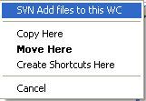
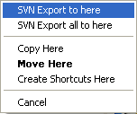
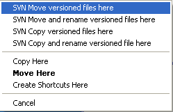

die am meisten übersehene Funktion
$ADSENSE_TOPDE$TortoiseSVN bietet viele Funktionen. Die meisten Nutzer werden nie alle dieser Funktionen verwenden sondern nur einige wenige, abhängig von den Projekten mit welchen TortoiseSVN eingesetzt wird. Aber es gibt einige Funktionen welche viele Leute benutzen würden wenn sie wüssten dass es diese Funktionen überhaupt gibt.
Wenn eine Funktion nicht sofort ersichtlich ist sonder
so versteckt dass viele Nutzer gar nicht wissen dass
es diese Funktion gibt, dann muss die Benutzeroberfläche
verbessert werden damit die Funktion besser erkennbar ist.
Aber manchmal ist dies leider nicht möglich, oder wir
wissen einfach nicht wie wir die Benutzeroberfläche
verbessern könnten.
Dies ist so eine Situation:
Rechts ziehen
Im Windows Explorer ist es möglich, Dateien zu verschieben oder zu kopieren durch ziehen der Dateien mit der linken, aber auch mit der rechten Maustaste. Wenn man Dateien mit der rechten Maustaste zieht, erscheint ein Kontextmenu sobald man die rechte Maustaste wieder loslässt. In diesem Kontextmenu kann man dann wählen, ob die Datei(en) verschoben, kopiert oder nur eine Verknüpfung erstellt werden soll.
TortoiseSVN fügt eigene Befehle zu diesem Kontextmenu hinzu. Die Screenshots zeigen das Kontextmenu wenn man Dateien/Verzeichnisse von ausserhalb einer Arbeitskopie auf eine Arbeitskopie zieht:
Wie im Screenshot zu erkennen ist, erlaubt TortoiseSVN mit den Einträgen im Kontextmenu das hinzufügen der Objekte zur Arbeitskopie. D.h. die Objekte werden zuerst an den Zielort kopiert und dann wird ein "SVN Hinzufügen" ausgeführt.
Der Eintrag "Patch Hinzufügen" erscheint nur wenn eine *.patch oder *.diff Datei auf eine Arbeitskopie gezogen wird. Dieser Befehl startet TortoiseMerge und erlaubt so das hinzufügen des Patches zur Arbeitskopie.
Das folgente Kontextmenu erscheint beim ziehen von Dateien/Verzeichnissen aus einer Arbeitskopie auf einen normalen Ordner:
Diese Befehle erlauben das Exportieren der Objekte:
- SVN hier exportieren: exportiert die gezogenen Dateien/Ordner zum Zielort, d.h. erstellt eine Kopie ohne die versteckten .svn Ordner.
- SVN alle hier exportieren: exportiert die gezogenen Dateien/Ordner zum Zielort, einschliesslich der nicht versionierten Dateien und Ordner.
Zu guter Letzt das Kontextmenu beim Ziehen von Objekten innerhalb einer Arbeitskopie:
Diese Befehle helfen bei der Reorganisation der Arbeitskopie, d.h. beim Verschieben und Kopieren von Dateien innerhalb einer Arbeitskopie:
- SVN Objekte hierher verschieben: verschiebt die Dateien/Ordner an den Zielort. Falls die Datei am Zielort bereits existiert wird TortoiseSVN nachfragen was genau zu tun ist: Datei umbenennen, die Zieldatei überschreiben oder das Verschieben abbrechen.
- SVN Objekt hierher kopieren und umbenennen: wie 'SVN Objekte hierher verschieben' aber TortoiseSVN fragt vor dem Verschieben nach einem neuen Namen für das Objekt.
- SVN Objekte hierher kopieren: wie 'SVN Objekte hierher verschieben' aber die Originaldatei wird beibehalten. D.h. das Objekt wird kopiert, nicht verschoben.
- SVN Objekte hierher kopieren und umbenennen: wie 'SVN Objekte hierher verschieben und umbenennen' aber die Originaldatei wird beibehalten. D.h. das Objekt wird kopiert, nicht verschoben.